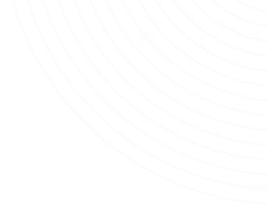
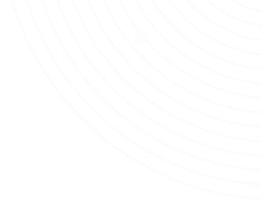

Über mich.
Fachinformatiker in Ausbildung | Web Entwickler
Hi, ich bin Michael, ein Fachinformatiker in Ausbildung zum Anwendungsentwickler. Ich bin ein kreativer und innovativer Denker mit einer Leidenschaft für Technologie. Ich bin immer auf der Suche nach neuen Herausforderungen und Möglichkeiten, meine Fähigkeiten zu verbessern.

Startpage
HTML | CSS | JavaScript
Eine einfache Startpage für den Browser mit meinen meistgenutzten Webseiten. Mit light- und dark mode. Responsive gestaltet, so dass es auf dem mobilen Gerät gut aussieht. Mit persönlicher Begrüßung je nach Tageszeit.
Workappholic
HTML | CSS | JavaScript
Eine einfache Webseite um Kontakte hinzuzufügen bei denen man sich beworben hat. Tabellen- oder Textprogramme gehören der Vergangenheit an, mit diesem Tool hat man alles sofort und in Echtzeit auf seinem Bildschirm zeitlich geordnet.